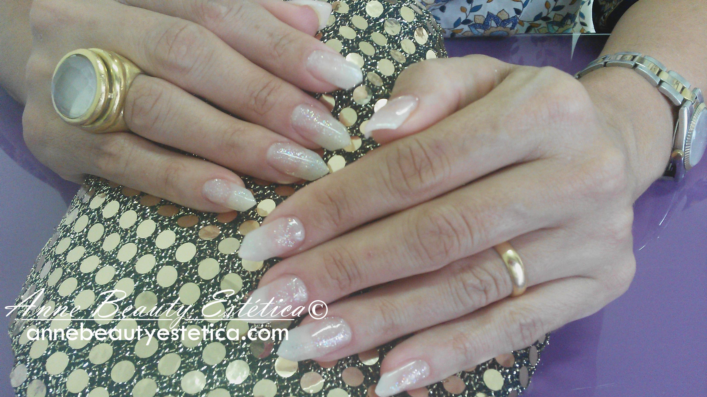

Unhas em Gel
A moda das Unhas em Gel veio para ficar e dizem os entendidos que as unhas naturais, se enfraquecidas, acabam ficando mais saudáveis, devido à proteção que a Unha em Gel dá.
O esmalte aguenta muito mais tempo do que em unhas naturais e pode sempre escolher colocar uns bonequinhos ou umas risquinhas para variar. Um efeito devastador.
O efeito extraordinário e a beleza que as unhas irradiam depois do tratamento estar feito é de tal forma digno de comentários que toda a gente quer aderir. As manutenções, normalmente têm de ser feitas de 3 em 3 semanas, mas vai sempre depender do crescimento da unha e do cuidado de cada pessoa.
